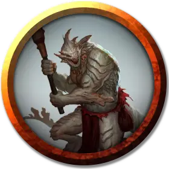

Троглодит чемпион Лаогзеда
Troglodyte Champion of Laogzed
Средний Гуманоид (Троглодит), хаотично-злой

Класс Доспеха 14 (природный доспех)
Хиты 59 (7к8 + 28)
Скорость 30 футов
| мод | спас | ||
|---|---|---|---|
| СИЛ | 18 | +4 | +4 |
| ЛОВ | 12 | +1 | +1 |
| ТЕЛ | 18 | +4 | +4 |
| мод | спас | ||
|---|---|---|---|
| ИНТ | 8 | −1 | −1 |
| МДР | 12 | +1 | +1 |
| ХАР | 12 | +1 | +1 |
Навыки Атлетика +6, Запугивание +3, Скрытность +3
Чувства тёмное зрение 60 футов, пассивное Восприятие 11
Языки Троглодитский
Опасность 3 (700 опыта)
Бонус мастерства +2
Особенности
Кожа хамелеона. Троглодит совершает с преимуществом проверки Ловкости (Скрытность), совершенные чтобы спрятаться.
Вонь. Все существа кроме троглодитов, начинающие ход в пределах 5 футов от троглодита, должны преуспеть в спасброске Телосложения Сл 14, иначе станут отравленными до начала своего следующего хода. При успешном спасброске существо получает иммунитет к вони всех троглодитов на 1 час.
Чувствительность к солнечному свету. Находясь на солнечном свету, троглодит совершает с помехой броски атаки, а также проверки Мудрости (Восприятие), полагающиеся на зрение.
Действия
Мультиатака. Троглодит совершает три атаки: одну укусом, и две когтями.
Укус. Рукопашная атака оружием: +6 к попаданию, досягаемость 5 футов, одна цель. Попадание: Колющий урон 6 (1к4 + 4).
Коготь. Рукопашная атака оружием: +6 к попаданию, досягаемость 5 футов, одна цель. Попадание: Рубящий урон 8 (1к8 + 4).
Палица. . Рукопашная атака оружием: +6 к попаданию, досягаемость 5 фт., одна цель. Попадание: Дробящий урон 8 (1к8 + 4).
Кислотный поток (Перезарядка 5-6). Троглодит плюет кислотой по линии длиной 15 футов и шириной 5 футов. Каждое существо в этой линии должно совершить спасбросок Ловкости Сл 14, и получить урон кислотой 10 (3к6) при провале или половину этого урона при успехе.
Описание
Изредка у племени троглодитов рождается необычайно сильная и умная особь, способная плеваться кислотой, и многие троглодиты воспринимают это как благословение от Лаогзеда – их демонического бога. Такие громадные чемпионы троглодитов становятся отличными вождями.
Дикие и первобытные троглодиты обитают в верхних частях Подземья, живя в постоянном состоянии войны с соседями и друг с другом. Они помечают границы своей территории потрескавшимися костями и черепами или пиктограммами, нарисованными кровью или пометом.
Возможно, самые отвратительные из всех гуманоидов, троглодиты едят все, что могут проглотить. Они живут в грязи. Стены их пещерных жилищ покрыты глубоко въевшимися нечистотами, маслянистыми выделениями и остатками их омерзительных трапез.
Скудоумные громилы. У троглодитов примитивная общинная культура, практически полностью сфокусированная на добыче пропитания. Недостаточно сообразительные, чтобы планировать дальше, чем на несколько дней вперед, троглодиты для выживания полагаются на постоянные грабежи и охоту. Они получают садистское удовольствие от охоты на более слабых разумных существ, и не выказывают жалости к тем, кого они захватывают, утаскивая в свои логова, чтобы сожрать. Самые большие и сильные троглодиты становятся вожаками в охоте и лидерами своих племен. Однако при малейшем проявлении слабости или неуверенности другие троглодиты набрасываются на них и сжирают.
Троглодиты мало что изготавливают, а строят и того меньше, получая все свое имущество от жертв. Они осознают ценность металлического оружия и брони, и дерутся между собой за право обладания ими. Племя троглодитов может сильно пострадать в результате междоусобной драки за один-единственный длинный меч.
Последователи Лаогзеда. Некоторые троглодиты поклоняются Лаогзеду, демоническому ужасно жирному жабоящеру, который спит в Бездне. В ответ Лаогзед не предоставляет троглодитам ничего кроме примера для подражания, ведь каждый из них мечтает стать таким же толстым, откормленным и праздным, каким кажется он.